Primary value categories
lvalue – Locator value
prvalue – Pure rvalue
xvalue – eXpiring value
C++ Day 2020 - online edition
Kris van Rens
(questions)
(questions)


Value categories are not about objects or class types, they are about expressions!
An expression is a sequence of operators and their operands, that specifies a computation.
Expression evaluation may produce a result, and may generate a side-effect.
In C++, each expression is identified by two properties:
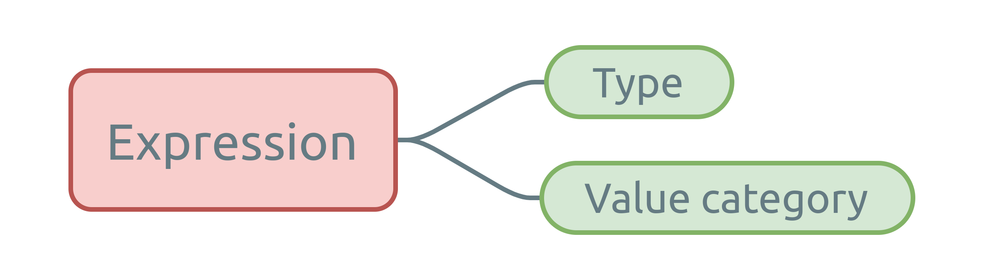
lvalue – Locator value
prvalue – Pure rvalue
xvalue – eXpiring value
glvalue – General lvalue
rvalue – errrRrr..value 
Value categories are organized based on expression properties:
Expression result resources can be stolen if it evaluates to an anonymous temporary, or if the associated object is near the end of its lifetime.
This was the main motivation for move semantics 
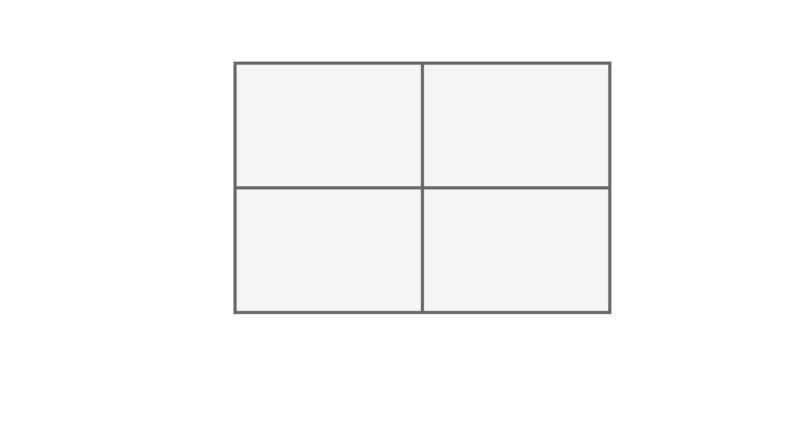
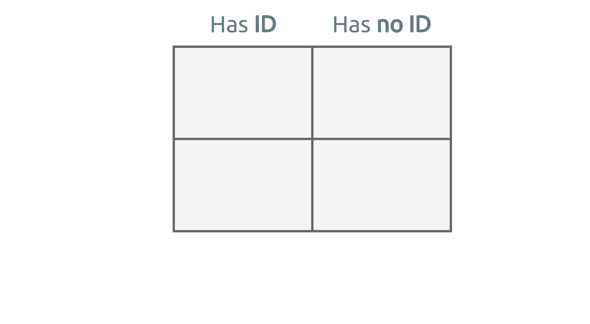
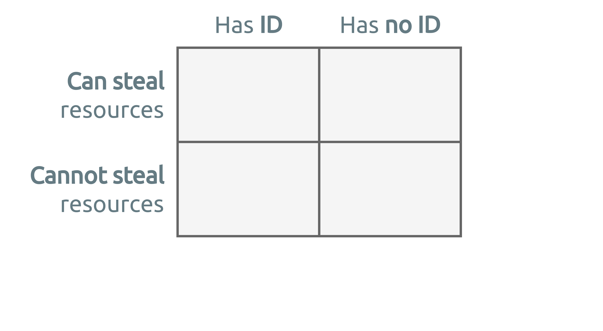

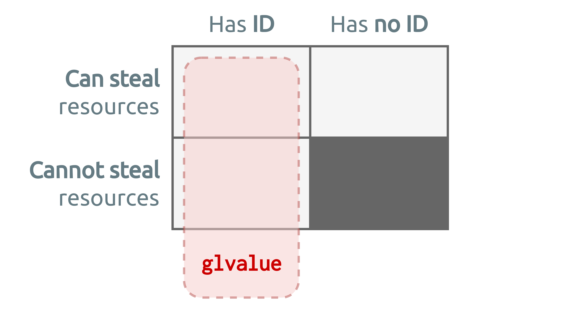
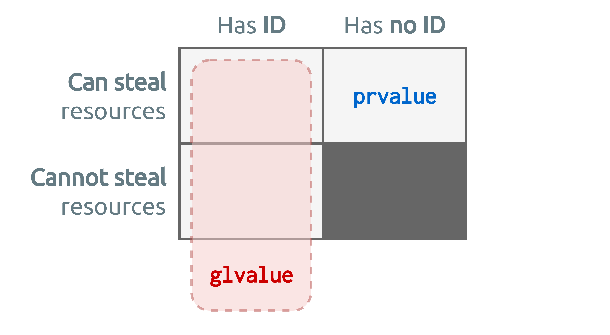
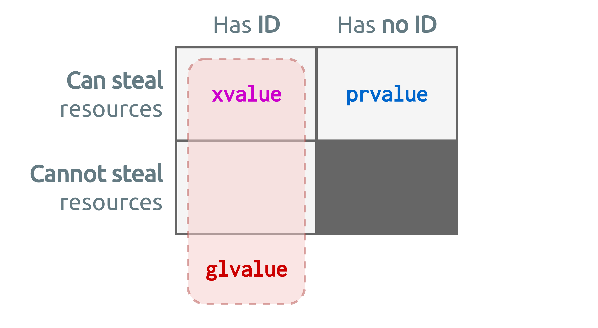

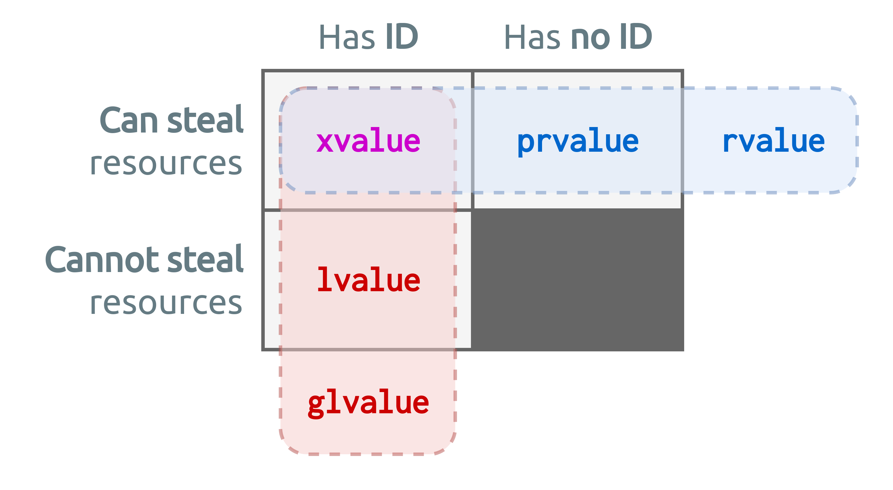
Expression x is an lvalue; so overload #1 is called
lvalue and rvalue concepts,Please forget the right-/left-hand notion for today’s definition.


A section in the C++ standard that describes the elision (i.e. omission) of copy/move operations, resulting in zero-copy pass-by-value semantics.
Restrictions apply 
Permits elisions, it does not guarantee!
Actual results depend on compiler and compiler settings.
No copy elision.
Partial copy elision.
Full copy elision.
return statement,throw expression,catch clause.Truth is; compilers have been doing it for years.. 
C++17 added mandates to the standard, informally known as:
A set of special rules for prvalue expressions.
If, in an initialization of an object, when the initializer expression is a
prvalueof the same class type as the variable type.
If, in a
returnstatement the operand is aprvalueof the same class type as the function return type.
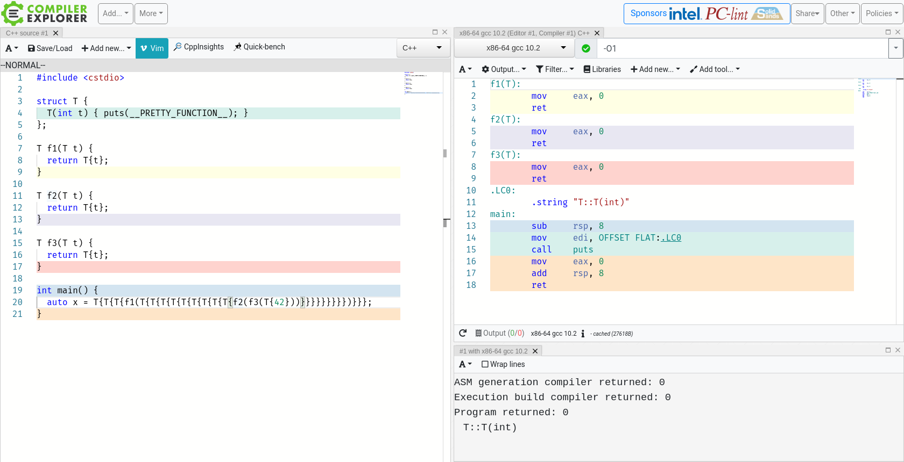
Under the rules of C++17, a
prvaluewill be used only as an unmaterialized recipe of an object, until actual materialization is required.
A
prvalueis an expression whose evaluation initializes/materializes an object.
This is called a temporary materialization conversion.
struct Person {
std::string name_;
unsigned int age_ = {};
};
Person createPerson() {
std::string name;
unsigned int age = 0;
// Get data from somewhere in runtime..
return Person{name, age}; // 1. Initial prvalue expression
}
int main() {
return createPerson().age_; // 2. Temporary materialization: xvalue
}An implicit
prvaluetoxvalueconversion.
prvalues are not moved from!

A variant of copy elision.
Two forms:

These terms live outside the standard.
Refers to the returning of temporary objects from a function.
Guaranteed by C++17 rules.
Refers to the returning of named objects from a function.
The most simple example
Slightly more involved
When even NRVO is not possible..
Implicit rvalue conversion!
operator=,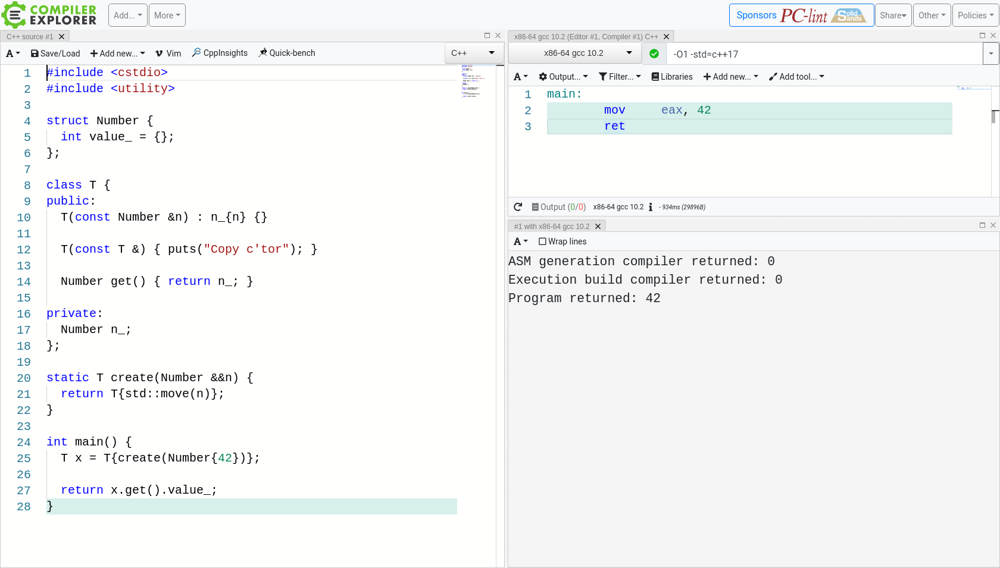
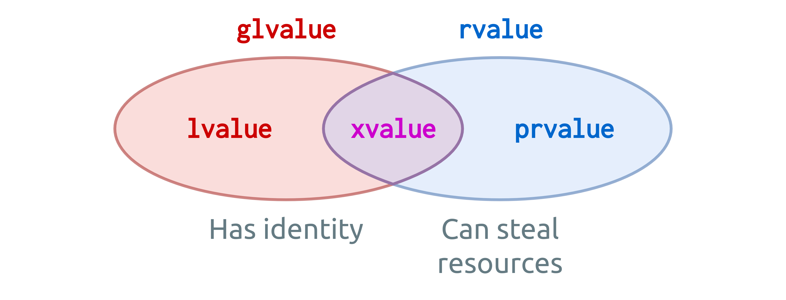
prvalues are not moved from.Thank you